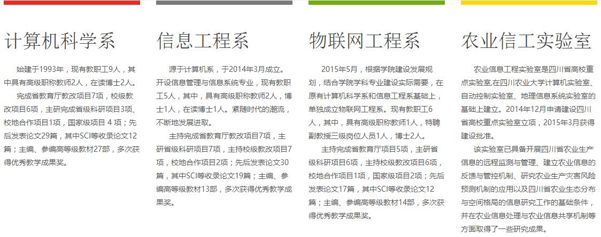

学院简介
信息工程学院是在原计算机系的基础上组建的全新的学院，前身是1985年成立的校实验中心计算机室，1995年并入新成立的工程技术学院。2002年，工程技术学院更名为信息与工程技术学院。2009年2月，经机构调整，学校组建新的信息与工程技术学院（简称工学院）。2014年3月，学校组建信息工程学院。
学院现有计算机科学、信息工程、物联网工程3个系；农业信息工程二级学科硕士点1个；计算机科学与技术、信息管理与信息系统、物联网工程3个本科专业;计算机科学与技术1个职教本科专业；1个省级重点实验室，1个校级计算机实验中心（面积3,049平方米，仪器设备1,485台件）。学院下设党委、行政及团委3个办公室。现有教职工28人，四川省学术带头人1人。高级职称人员5人，占23.8%；中级职称13人，占61.9%。专任教师中具有硕士以上学位人员的比例为 52.4%。2016年学生规模约1,982人。
